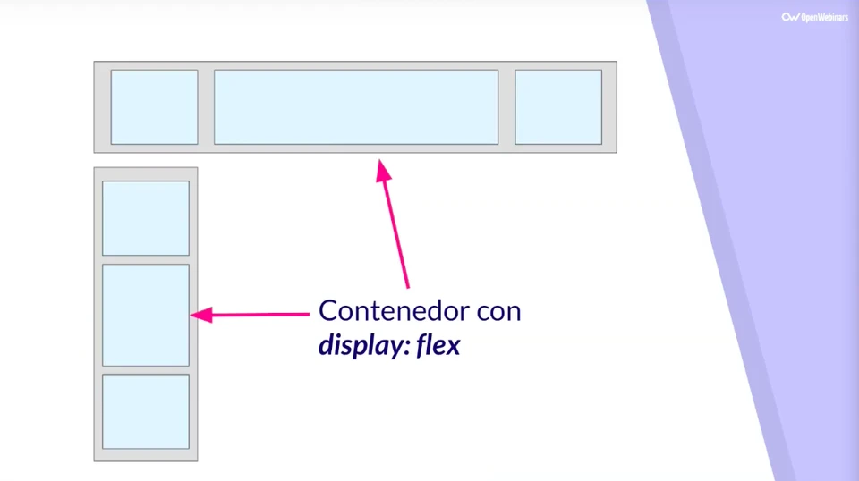

Las dos especificaciones comparten algunas características comunes, y si ya has aprendido cómo utilizar Flexbox, verás semejanzas que te ayudarán a entender Grid.
Qué es Flexbox
Se llama Flex porque tenemos un contenedor, llamado contenedor Flex, que es el elemento que contiene la propiedad display:flex. Desde ese contenedor vamos a poder especificar la alineación de los elementos que hay dentro, el tamaño de los elementos que contienen y distribuir el espacio restante que hay entre los elementos del contenedor Flex, y todo esto en una sola dirección, ya sea una horizontal o vertical. Es decir, podemos distribuir los elementos que contiene la etiqueta sin poner nada dentro de esos elementos.Ejemplo:

Qué es CSS Grid
Con Grid hacemos que un elemento contenga la propiedad display:grid, lo que nos permitirá maquetar de una forma mucho más fácil y potente que con cualquier otro tipo de propiedades.Esto es así porque, al contrario que en otras formas de maquetación, en Grid podemos establecer tanto las filas como las columnas que va a tener el diseño, maquetación o layout, además no sólo en una dimensión, como con Flexbox, sino que vamos a poder especificar la estructura en dos dimensiones.
Ejemplo: